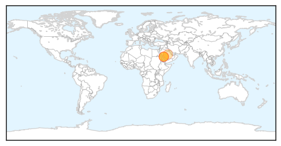

West Nile Virus
30-Day Web Trend
0 alerts, 0 warnings

30-Day Twitter Trend
3 alerts, 0 warnings

Article Locations

Article Confidences

Top Articles:
-
No articles found for Oct 29, 2014
Top Tweets:
-
No tweets found for Oct 29, 2014
MERS
30-Day Web Trend
0 alerts, 0 warnings
30-Day Twitter Trend
3 alerts, 0 warnings
Article Locations
Article Confidences

Top Articles:
Top Tweets:
- 0.597
- AFD Blog `Saudi MOH Announces 6 New MERS Cases' MERS-CoV http://t.co/8PpTsm7mjn